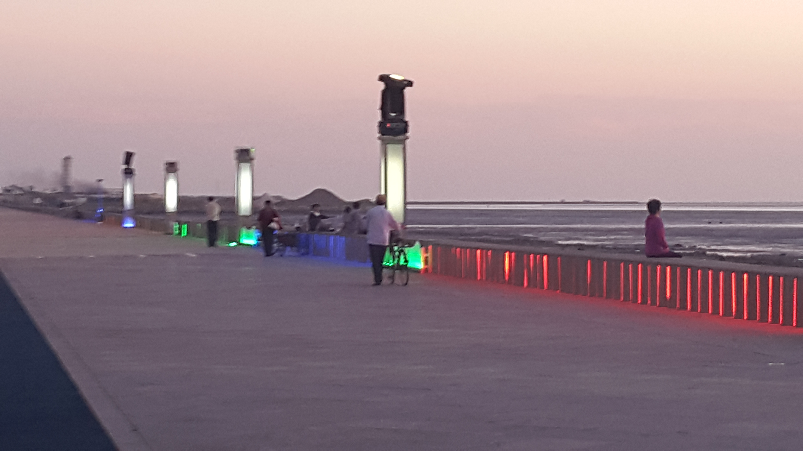

Parks in Yingkou
One of my favortie things about China was the parks. I did not spend a lot of time in Yingkou, but I did spend most of my time there wandering around the parks.

My favorite park in Yingkou was Mirror Lake Park. At least, that is what my friend said its name was.

I never learned the actual name of this park. It was prettier in the daylight, but much livelier at night.
I love the parks by the water. This was the prettiest park at sunset. I call it Seaside Park because it is right at the mouth of the river going into the gulf.

This one I knew translated to Forest Park. What didn't translate was the grid pattern the trees were planted in. A "forest" shouldn't be that manicured.

Every city I was in had a "Renmin Park" (or People's Park). And most of the ones I went to were also a zoo. Sort of.
Best part of getting to all these parks was the bus fare was ¥1.